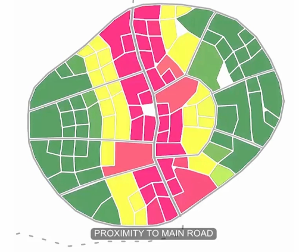

|
|-|-|
|
|-|-|| | |
|-|-|
Calculates direct distance between objects.
Distance between Objects
Choose objects such as points, lines or volumes representing i.e. streets or buildings. If distance from one to multiple objects is measured, the resulting values can be reduced to one: i.e. the closest or the furthest object or the average or sum of all distances.
Choosing object type
Distance is calculated by measuring the line between two points. If the distance between objects such as curves or volumes need to be calculated, the algorithm first searches for the closest points between two objects. However, this calculation step requires additional resources and slows down calculation. If faster calculation is preferred over precision, objects can be represented as points such as the center point. Therefore, the algorithm can directly measure the distance between center points instead of always calculating closest points as an additional step.
Calculating distances is a common task, especially for transportation purposes to streets, forests, market, churches, industry, etc..